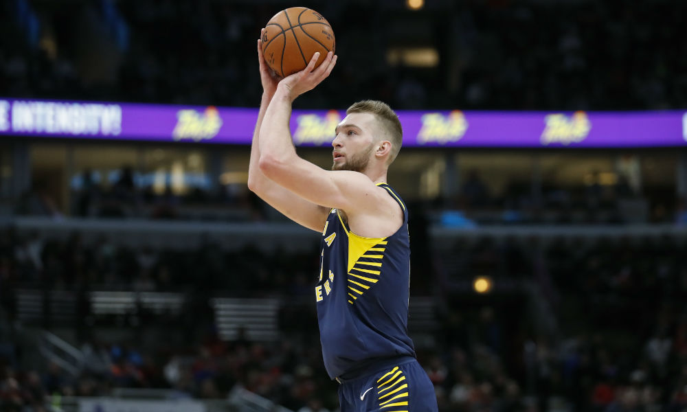
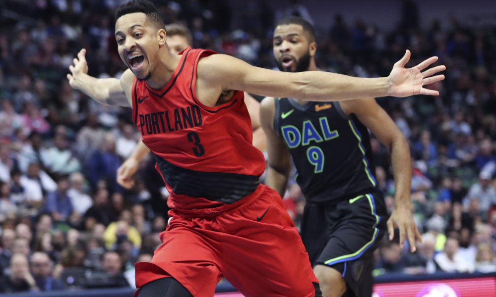

Game 1: Charlotte Hornets at Detroit Pistons
My Pick:
Detroit Pistons
Why I'm Rolling with them:
The Charlotte Hornets are still live or die by Kemba, and I'm sure he'll have another good game today. However, the Piston's frontcourt will be able to feast against this Charlotte interior, and I an very excited to see Drummond put up another 20/20 game as the Pistons win 121-114.
Game 2: Indiana Pacers at Houston Rockets
My Pick:
Indiana Pacers
Why I'm Rolling with them:
Houston lost to the Spurs yesterday in a close one, where they still didn't look great without playing Melo. This team has a lot of flux. The Pacers are very consistent, and they always show up to play. Oladipo is a tough matchup for Harden, as the All-Defense team guard will be looking to prove a point. Paul will need to step up to give Houston a chance at victory in this one. Pacers take it, 113-104.
 Domantis Sabonis is an early candidate for 6th Man of the YearGame 3: Orlando Magic at New York Knicks
My Pick:
New York Knicks
Why I'm Rolling with them:
Tim Hardaway Jr looked like he couldn't miss against the Raptors. Ntilinka will be more than enough to handle Augustin, and Robinson is athletic enough to give Vucevic fits. New York will take this one, 109-102.
Game 4: Milwaukee Bucks at Denver Nuggets
My Pick:
Denver Nuggets
Why I'm Rolling with them:
The Bucks lost in OT yesterday, and are now playing in Denver tonight. I can't think of a worse back to back to have. The Bucks don't really have anyone to deal with Jokic, and the Denver guards should be able to handle the Milwaukee perimeter players. Millsap and Giannis is a clear edge to Giannis, but not enough for this tired Milwaukee team. Denver, 117-112.
Game 5: Boston Celtics at Portland Trail Blazers
My Pick:
Boston Celtics
Why I'm Rolling with them:
Boston has a lot of depth and should be able to pull away when each team has their second unit on the court. Having Irving back will also help the Celtics, as they miss having a go-to shot creator. This Portland team has a lot of talent, but Boston's wings will give them headaches, and having Smart to guard Lillard is a huge bonus. Boston 119-115.
 McCollum is an All-Star calibre playerGame 6: Atlanta Hawks at Los Angeles Lakers
My Pick:
Los Angeles Lakers
Why I'm Rolling with them:
The Lakers held a very fast paced Sacramento offense to just 86 yesterday, and are playing a team tonight with some offensive questions. It will be interesting to see how Jeremy Lin does off of the bench, as he's been having a great season. At the end of the day, this LA team is just too experienced for the Hawks to be able to take them, and the Laker's starting lineup may have Atlanta outclassed at every position. Lakers 105-93.